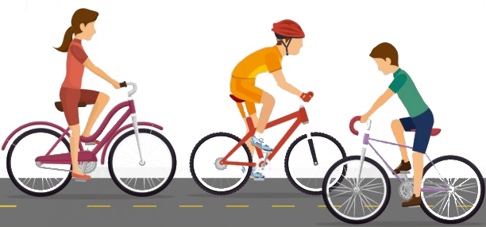

Desenvolvi este site para incentivar a prática do ciclismo, que é um exercício físico proveitoso em vários aspectos, principalmente para a saúde, através do conhecimento melhor deste exercício, assim alcançamos do amante deste exercício e até mesmo quem está começando agora.
O ciclismo é uma atividade física rítmica (que repete o mesmo movimento diversas vezes). O esporte ajuda a desenvolver o sistema cardiovascular, na perda de gordura e, também a força e resistência nos músculos da perna.
Aumento no condicionamento físico.
Fortalecimento nas relações pessoais.
Aumento na saúde.